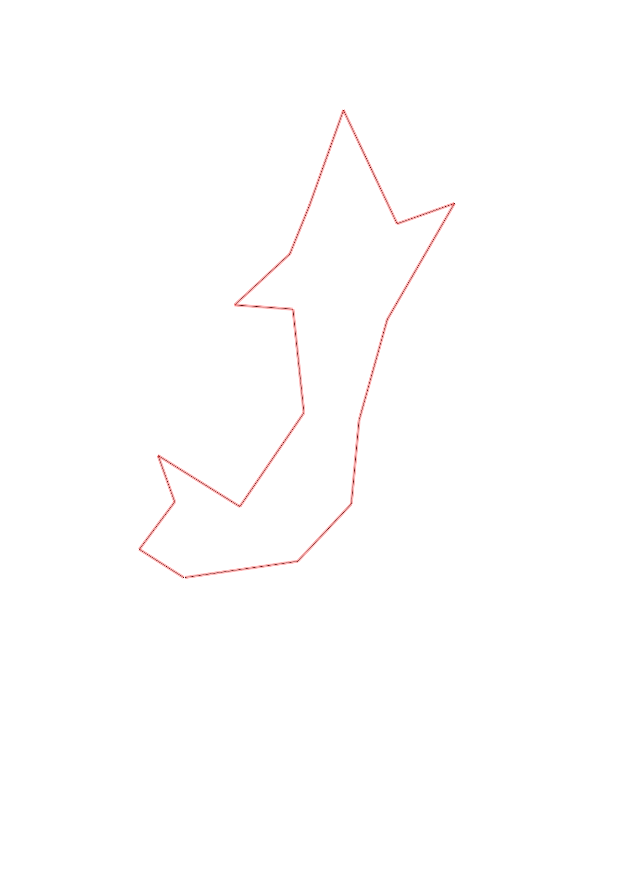
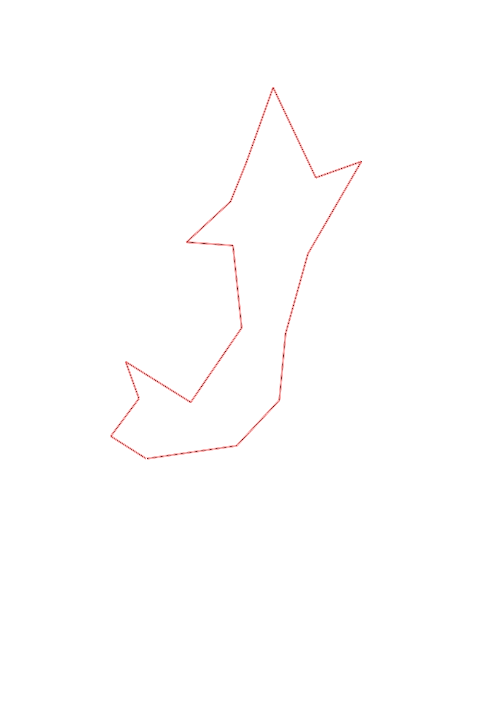

| Control |
Points |
Time Punched |
Distance |
Your Time |
Pace |
Place |
Fastest Time |
Median Time |
% Behind Fastest |
| 35 |
30 |
|
0.27 |
0:02:09 |
07:57 |
12 / 17 |
0:01:07 |
0:01:37 |
92% |
| 51 |
50 |
|
0.3 |
0:04:17 |
14:16 |
11 / 12 |
0:02:01 |
0:03:06 |
112% |
| 58 |
50 |
|
0.25 |
0:01:55 |
07:40 |
4 / 9 |
0:01:32 |
0:02:16 |
25% |
| 41 |
40 |
|
0.49 |
0:03:45 |
07:39 |
2 / 4 |
0:03:39 |
0:04:05 |
2% |
| 36 |
30 |
|
0.57 |
0:07:41 |
13:28 |
1 / 1 |
0:07:41 |
0:07:41 |
0% |
| 34 |
30 |
|
0.53 |
0:03:06 |
05:50 |
1 / 3 |
0:03:06 |
0:03:43 |
0% |
| 65 |
60 |
|
0.3 |
0:04:23 |
14:36 |
2 / 3 |
0:02:44 |
0:04:23 |
60% |
| 39 |
30 |
|
0.38 |
0:02:44 |
07:11 |
4 / 7 |
0:02:28 |
0:02:44 |
10% |
| 77 |
70 |
|
0.27 |
0:02:12 |
08:08 |
9 / 9 |
0:01:14 |
0:01:56 |
78% |
| 100 |
100 |
|
0.51 |
0:03:36 |
07:03 |
3 / 6 |
0:02:50 |
0:03:40 |
27% |
| 50 |
50 |
|
0.63 |
0:04:42 |
07:27 |
1 / 1 |
0:04:42 |
0:04:42 |
0% |
| 67 |
60 |
|
0.31 |
0:05:00 |
16:07 |
2 / 3 |
0:02:51 |
0:05:00 |
75% |
| 61 |
60 |
|
0.68 |
0:08:42 |
12:47 |
3 / 3 |
0:04:49 |
0:04:54 |
80% |
| 59 |
50 |
|
0.53 |
0:03:43 |
07:00 |
3 / 7 |
0:03:28 |
0:04:06 |
7% |
| 48 |
40 |
|
0.43 |
0:05:20 |
12:24 |
3 / 3 |
0:04:29 |
0:05:03 |
18% |
| 80 |
80 |
|
0.4 |
0:05:26 |
13:35 |
2 / 2 |
0:05:17 |
0:05:21 |
2% |
| Finish |
0 |
|
0.57 |
0:04:00 |
07:01 |
1 / 2 |
0:04:00 |
0:04:09 |
0% |
Total Distance Covered: 7.42km
Points Scored: 830
Late Penalty: -260
Final Score: 570
Total Time: 1hours 12minutes 41seconds
Efficiency: 76.82 points/km
 
